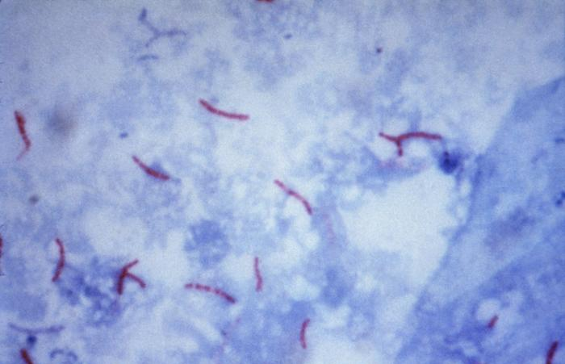

La tuberculosis se puede tratar
Encontrá orientación para acompañar el tratamiento indicado.
El tratamiento de la enfermedad activa utiliza antibióticos. Los medicamentos y su duración dependen de la evaluación y del tipo de TB.
Sentirte mejor no significa que debás suspenderlo. Tomá los medicamentos durante todo el tiempo indicado. Interrumpirlos antes de tiempo o tomarlos de forma irregular puede favorecer la resistencia a los medicamentos.
Si tenés molestias o dificultades para tomar los medicamentos, contactá al personal de salud. Ante señales como piel u ojos amarillos o sensación de desmayo, buscá atención inmediata. El equipo de salud puede indicar cambios o suspender los medicamentos.
Ver fuentes
Respaldo: OMS: tratamiento [3] · CDC: prevención [9] · CDC: tratamiento [12]
